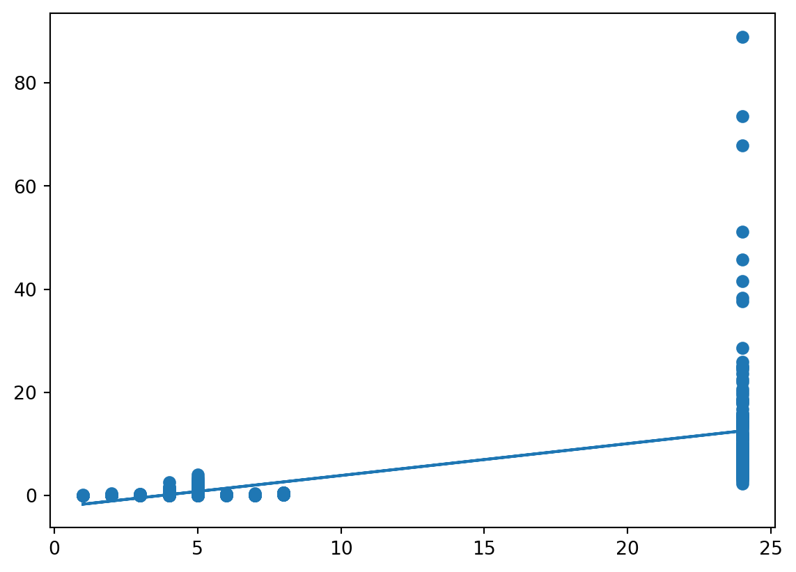
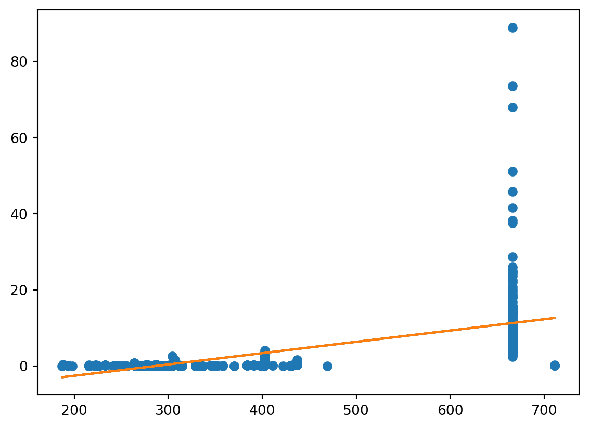
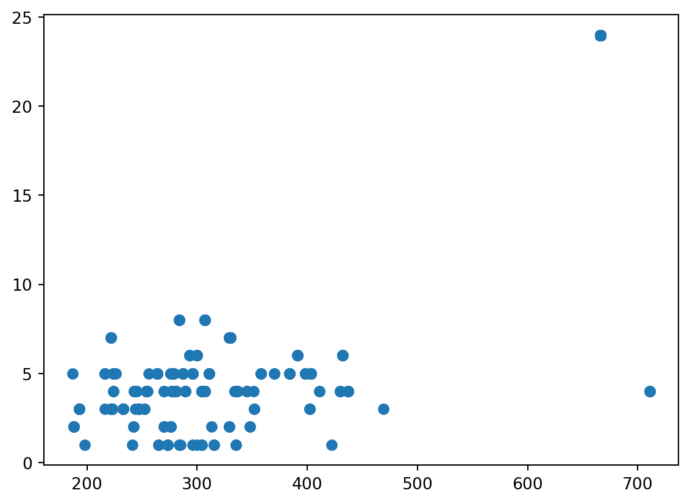
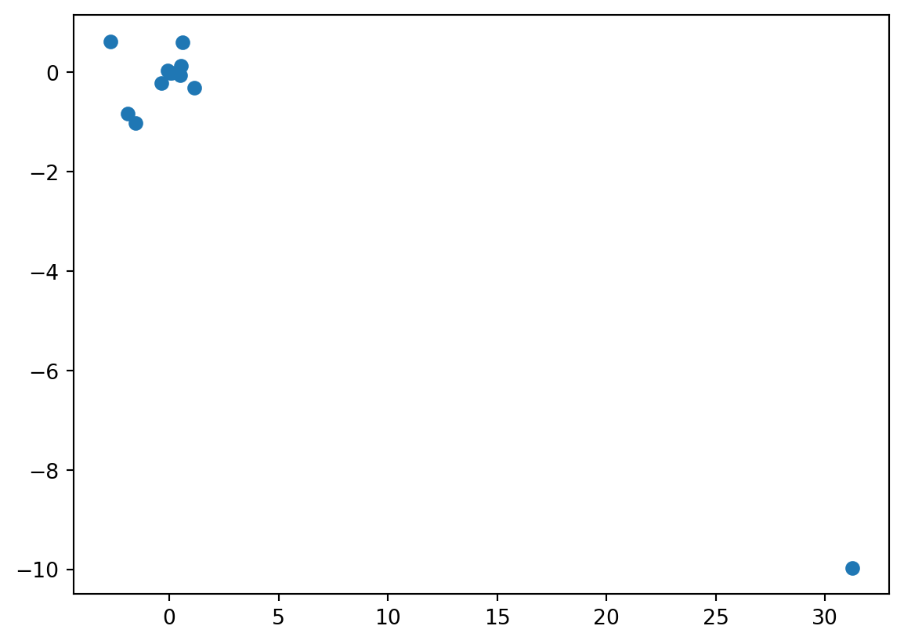

import pandas as pd
import numpy as np
import matplotlib.pyplot as plt
import statsmodels.api as sm
import statsmodels.formula.api as smf12 More linear regression
Note
Update 9/11. Added exercises and curriculum.
12.1 Curriculum
- James et al., Chapter 3.4 - 3.5
The methods used in Chapter 3.4 are implemented in here. You need to copy the code for the class LinearRegDiagnostic into Python and run it. Make sure to important statsmodels using import statsmodels first. If you don’t, it won’t work.
You may want to take a look at the “official” slides for the chapter, found here.
12.2 Exercises
The exercises this week overlap with last week, since the chapter is so large. All exercises (except those about KNN) are relevant and recommended.
12.2.0.1 Conceptual
- 3.7.4 Verify your answers using a suitable Python simulation.
- 3.7.5
12.2.0.2 Applied
- 3.15
- 3.13
- 3.12
12.2.1 Solution to 3.15
We import the usual stuff.
In addition, we will important pprint, which allows us to visualize lists and dictionaries easier.
import pprintImport the data:
boston = pd.read_csv("Boston.csv", na_values="?")
boston.drop(boston.columns[0], axis = 1, inplace = True)And have a short look at it.
boston.info()
boston.describe()<class 'pandas.core.frame.DataFrame'>
RangeIndex: 506 entries, 0 to 505
Data columns (total 13 columns):
# Column Non-Null Count Dtype
--- ------ -------------- -----
0 crim 506 non-null float64
1 zn 506 non-null float64
2 indus 506 non-null float64
3 chas 506 non-null int64
4 nox 506 non-null float64
5 rm 506 non-null float64
6 age 506 non-null float64
7 dis 506 non-null float64
8 rad 506 non-null int64
9 tax 506 non-null int64
10 ptratio 506 non-null float64
11 lstat 506 non-null float64
12 medv 506 non-null float64
dtypes: float64(10), int64(3)
memory usage: 51.5 KB| crim | zn | indus | chas | nox | rm | age | dis | rad | tax | ptratio | lstat | medv | |
|---|---|---|---|---|---|---|---|---|---|---|---|---|---|
| count | 506.000000 | 506.000000 | 506.000000 | 506.000000 | 506.000000 | 506.000000 | 506.000000 | 506.000000 | 506.000000 | 506.000000 | 506.000000 | 506.000000 | 506.000000 |
| mean | 3.613524 | 11.363636 | 11.136779 | 0.069170 | 0.554695 | 6.284634 | 68.574901 | 3.795043 | 9.549407 | 408.237154 | 18.455534 | 12.653063 | 22.532806 |
| std | 8.601545 | 23.322453 | 6.860353 | 0.253994 | 0.115878 | 0.702617 | 28.148861 | 2.105710 | 8.707259 | 168.537116 | 2.164946 | 7.141062 | 9.197104 |
| min | 0.006320 | 0.000000 | 0.460000 | 0.000000 | 0.385000 | 3.561000 | 2.900000 | 1.129600 | 1.000000 | 187.000000 | 12.600000 | 1.730000 | 5.000000 |
| 25% | 0.082045 | 0.000000 | 5.190000 | 0.000000 | 0.449000 | 5.885500 | 45.025000 | 2.100175 | 4.000000 | 279.000000 | 17.400000 | 6.950000 | 17.025000 |
| 50% | 0.256510 | 0.000000 | 9.690000 | 0.000000 | 0.538000 | 6.208500 | 77.500000 | 3.207450 | 5.000000 | 330.000000 | 19.050000 | 11.360000 | 21.200000 |
| 75% | 3.677083 | 12.500000 | 18.100000 | 0.000000 | 0.624000 | 6.623500 | 94.075000 | 5.188425 | 24.000000 | 666.000000 | 20.200000 | 16.955000 | 25.000000 |
| max | 88.976200 | 100.000000 | 27.740000 | 1.000000 | 0.871000 | 8.780000 | 100.000000 | 12.126500 | 24.000000 | 711.000000 | 22.000000 | 37.970000 | 50.000000 |
12.2.1.1 (a)
We need to fit one regression model for each covariates. One way to do this is as follows: You first make a set of all the covariates in the data, then use a dictionary comprehension to fit models for every single formula.
covariates = set(boston.columns.values.tolist()) - set(["crim"])
fits = {cov: smf.ols("crim ~ " + cov, data = boston).fit() for cov in covariates}It’s advisable to use pprint to display this data, as it makes it easier on the eyes.
Here we take a look at the p-values and \(R^2\)s for each fit.
pp = pprint.PrettyPrinter(indent=4)
pp.pprint([(key, value.rsquared.round(2), value.pvalues[1].round(3)) for key, value in fits.items()])[ ('chas', 0.0, 0.209),
('dis', 0.14, 0.0),
('medv', 0.15, 0.0),
('indus', 0.17, 0.0),
('tax', 0.34, 0.0),
('nox', 0.18, 0.0),
('age', 0.12, 0.0),
('ptratio', 0.08, 0.0),
('rm', 0.05, 0.0),
('lstat', 0.21, 0.0),
('zn', 0.04, 0.0),
('rad', 0.39, 0.0)]It’s clear that all p-values except chas are 0, thus almost every covariate has some relationship with crim. The highest \(R^2\) belong to tax and rad.
plt.clf()
plt.scatter(boston.rad, boston.crim)
plt.plot(boston.rad, fits["rad"].params[0] + fits["rad"].params[1] * boston.rad)
plt.show()
plt.clf()
plt.scatter(boston.tax, boston.crim)
plt.plot(boston.tax, fits["tax"].params[0] + fits["tax"].params[1] * boston.tax)
plt.plot(boston.tax, fits["tax"].predict())
plt.show()
Observe that these plots are nearly identical. Moreover, the relationship is evidently not linear. It rather seems like there are two distinct clusters of observations. One could plausibly model this sort of scenario using decision trees, which is a subject of your next course.
When two variables look very similar when plotted in this way, it is reasonable to calculate their correlation and make a plot of them to see if they measure essentially different things.
plt.clf()
plt.scatter(boston.tax, boston.rad)
plt.show()
np.corrcoef(boston.tax, boston.rad)
array([[1. , 0.91022819],
[0.91022819, 1. ]])It’s hard to see from this plot why the correlation is so large. The reason is repeated observations. In particular, the number of observations for the point (24,666) is 132, which causes the high correlation. On way to show this is by using the Counter function.
from collections import Counter
pp.pprint(Counter(zip(boston.rad, boston.tax)))Counter({ (24, 666): 132,
(5, 403): 30,
(4, 307): 22,
(8, 307): 18,
(4, 437): 15,
(5, 398): 12,
(5, 264): 12,
(4, 304): 12,
(5, 384): 11,
(4, 277): 11,
(7, 330): 10,
(3, 233): 9,
(6, 432): 9,
(3, 193): 8,
(5, 287): 8,
(5, 224): 8,
(6, 391): 8,
(5, 311): 7,
(2, 188): 7,
(5, 296): 7,
(8, 284): 6,
(6, 300): 6,
(2, 276): 5,
(3, 223): 5,
(4, 254): 5,
(4, 289): 5,
(4, 711): 5,
(1, 273): 5,
(5, 279): 4,
(4, 243): 4,
(4, 305): 4,
(4, 281): 4,
(3, 247): 4,
(2, 270): 4,
(5, 276): 4,
(5, 216): 4,
(7, 222): 4,
(3, 222): 3,
(4, 345): 3,
(4, 270): 3,
(2, 329): 3,
(6, 293): 3,
(4, 245): 3,
(5, 358): 3,
(7, 329): 3,
(4, 430): 3,
(2, 242): 2,
(3, 252): 2,
(4, 337): 2,
(1, 265): 2,
(3, 402): 2,
(2, 348): 2,
(4, 224): 2,
(1, 315): 2,
(1, 304): 2,
(5, 370): 2,
(3, 352): 2,
(1, 335): 2,
(4, 411): 2,
(4, 334): 2,
(1, 296): 1,
(3, 469): 1,
(5, 226): 1,
(2, 313): 1,
(5, 256): 1,
(3, 216): 1,
(4, 255): 1,
(3, 244): 1,
(1, 198): 1,
(1, 285): 1,
(1, 300): 1,
(1, 241): 1,
(1, 284): 1,
(1, 422): 1,
(4, 351): 1,
(4, 280): 1,
(5, 187): 1})13 (b)
We must join together crim with all covariates in the table except crim.
formula = "crim" + "~" + "+".join(boston.columns.difference(["crim"]))
fit = smf.ols(formula, boston).fit()
fit.summary()| Dep. Variable: | crim | R-squared: | 0.449 |
| Model: | OLS | Adj. R-squared: | 0.436 |
| Method: | Least Squares | F-statistic: | 33.52 |
| Date: | Wed, 15 Nov 2023 | Prob (F-statistic): | 2.03e-56 |
| Time: | 13:58:54 | Log-Likelihood: | -1655.4 |
| No. Observations: | 506 | AIC: | 3337. |
| Df Residuals: | 493 | BIC: | 3392. |
| Df Model: | 12 | ||
| Covariance Type: | nonrobust |
| coef | std err | t | P>|t| | [0.025 | 0.975] | |
| Intercept | 13.7784 | 7.082 | 1.946 | 0.052 | -0.136 | 27.693 |
| age | -0.0008 | 0.018 | -0.047 | 0.962 | -0.036 | 0.034 |
| chas | -0.8254 | 1.183 | -0.697 | 0.486 | -3.150 | 1.500 |
| dis | -1.0122 | 0.282 | -3.584 | 0.000 | -1.567 | -0.457 |
| indus | -0.0584 | 0.084 | -0.698 | 0.486 | -0.223 | 0.106 |
| lstat | 0.1388 | 0.076 | 1.833 | 0.067 | -0.010 | 0.288 |
| medv | -0.2201 | 0.060 | -3.678 | 0.000 | -0.338 | -0.103 |
| nox | -9.9576 | 5.290 | -1.882 | 0.060 | -20.351 | 0.436 |
| ptratio | -0.3041 | 0.186 | -1.632 | 0.103 | -0.670 | 0.062 |
| rad | 0.6125 | 0.088 | 6.997 | 0.000 | 0.440 | 0.784 |
| rm | 0.6289 | 0.607 | 1.036 | 0.301 | -0.564 | 1.822 |
| tax | -0.0038 | 0.005 | -0.730 | 0.466 | -0.014 | 0.006 |
| zn | 0.0457 | 0.019 | 2.433 | 0.015 | 0.009 | 0.083 |
| Omnibus: | 663.436 | Durbin-Watson: | 1.516 |
| Prob(Omnibus): | 0.000 | Jarque-Bera (JB): | 80856.852 |
| Skew: | 6.579 | Prob(JB): | 0.00 |
| Kurtosis: | 63.514 | Cond. No. | 1.24e+04 |
Notes:
[1] Standard Errors assume that the covariance matrix of the errors is correctly specified.
[2] The condition number is large, 1.24e+04. This might indicate that there are
strong multicollinearity or other numerical problems.
Note that many covariates are not significant anymore. In particular, tax is not significant! Try to understand why; the reason is explained in the previous exercise.
14 (c)
We need to sort the univariate results from exercise (a) before plotting, as the covariates in exercise (b) are already sorted. To do this, we extract the relevant parameters. These are the slope parameters.
uni_ = sorted([(cov, fit.params[1]) for cov, fit in fits.items()])
pp.pprint(uni_)[ ('age', 0.1077862271395331),
('chas', -1.892776550803758),
('dis', -1.5509016824100994),
('indus', 0.5097763311042306),
('lstat', 0.5488047820623981),
('medv', -0.363159922257603),
('nox', 31.248531201122923),
('ptratio', 1.1519827870705872),
('rad', 0.6179109273272014),
('rm', -2.684051224113948),
('tax', 0.02974225282276537),
('zn', -0.07393497740412368)]To plot the parameter values we must remove the covariate names from the list. (Or turn our data into a data frame; there are many ways to solve this exercise.)
uni = [x for i,x in uni_]The \(y\)-axis are the non-intercept parameters from fit.
multi = fit.params[1:]plt.clf()
plt.scatter(uni, multi)
plt.show()
The parameters are widely different. This is to be expected. In general, whenever you add or remove parameters from a regression model, the parameters may fluctuate!
The most extreme change occurs at the lower-right corner. Which covariate is this? One way to find out is to do the following:
pp.pprint({cov: (x, y) for (cov, x), y in zip(uni_, multi)}){ 'age': (0.1077862271395331, -0.0008482790661906402),
'chas': (-1.892776550803758, -0.8253775522410146),
'dis': (-1.5509016824100994, -1.0122467382083935),
'indus': (0.5097763311042306, -0.058350110665981544),
'lstat': (0.5488047820623981, 0.1388005967767626),
'medv': (-0.363159922257603, -0.22005635903920306),
'nox': (31.248531201122923, -9.957586547089225),
'ptratio': (1.1519827870705872, -0.3040727572312342),
'rad': (0.6179109273272014, 0.6124653114967983),
'rm': (-2.684051224113948, 0.6289106621781995),
'tax': (0.02974225282276537, -0.0037756465234424076),
'zn': (-0.07393497740412368, 0.04571003863975589)}The variable with the largest change is nox.
14.0.0.1 (d)
This is a somewhat strange question. You know there is no-linearity from exercise (a). However, running a cubic regression can detect non-linearity in the following sense: If the data is non-linear (and \(n\) is high enough), it is likely that a cubic regression will fit better than a non-linear regression AND that either the quadratic coefficient or the cubic coefficient will be significant.
To fit the cubic regression we should use f-strings. Look them up if you haven’t seen them, they are very useful.
We make the fits as we did in exercise (a).
formula = lambda x: f"crim ~ {x} + I({x}**2) + I({x}**3)"
fits_cubic = {cov: smf.ols(formula(cov), boston).fit() for cov in covariates}Now we print the p-values for the quadratic and cubic coeffients:
pp.pprint([(cov, fit.pvalues[2].round(3), fit.pvalues[3].round(3)) for cov, fit in fits_cubic.items()])[ ('chas', 0.681, 0.681),
('dis', 0.0, 0.0),
('medv', 0.0, 0.0),
('indus', 0.0, 0.0),
('tax', 0.137, 0.244),
('nox', 0.0, 0.0),
('age', 0.047, 0.007),
('ptratio', 0.004, 0.006),
('rm', 0.364, 0.509),
('lstat', 0.065, 0.13),
('zn', 0.094, 0.23),
('rad', 0.613, 0.482)]Observe that most covariates have significant quadratic or cubic coefficients. However, tax and rad do not. This demonstrates that the method of using cubic regression is not sufficient to uncover non-linearity.
Which of the models would benefit from using cubic regressions? One way to find out is to compare the \(R^2\)s of both models.
pp.pprint({cov: (fit.rsquared_adj - fit_c.rsquared_adj).round(3) for (cov, fit), fit_c in zip(fits.items(), fits_cubic.values())}){ 'age': -0.047,
'chas': 0.002,
'dis': -0.131,
'indus': -0.092,
'lstat': -0.007,
'medv': -0.268,
'nox': -0.117,
'ptratio': -0.026,
'rad': -0.006,
'rm': -0.016,
'tax': -0.027,
'zn': -0.014}The difference is negative if the cubic is best, positive if not. Now we find that the cubic model works better for every model except chas, though only marginally so (the only covariates with a decent difference are dis, medv, and nox).